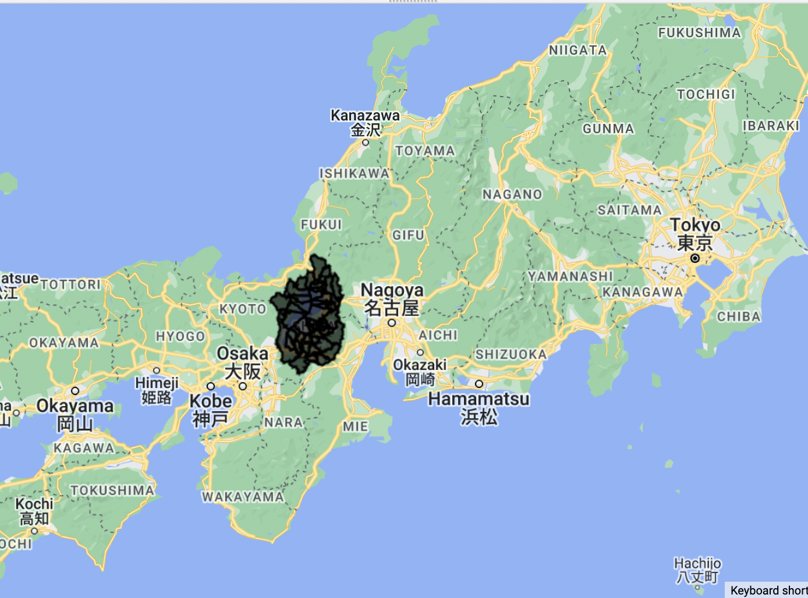

7.1 Summary of Lecture 7
Due to the synoptic view nature in remote sensing images, the remote sensing images produces are in map-like format, making it a viable source of gathering effective land cover information. However, just the raw image and identification with the naked eye is not reliable and accurate. Therefore, basic image classification is important to categorize all pixels in a digital image into one of several classes. Image classification is regarded as one of the most essential part in digital image analysis as it allows allocation of semantic labels to capture image. It is useful for research, and policy making purposes as it provides better understanding and details to the content within the image. The image above is a type of image processing using a technique of Feature Relations Map Learning for hyperspectral image, it automatically enhance the separability of different objects in an image (Dou and Zeng 2020). While using a segmented feature relations map (SFRM), it reflects the relations between spectral features through a normalized difference index (NDI), and it can then learn new features from SFRM using a CNN-based feature extractor (Dou and Zeng 2020). Conventionally, there are three types of image classification, including
Manual Classification
Pixel-based classification
Supervised image classification
Unsupervised image classification
Feature or object-based image classification
7.1.1 Pixel-based Classification
In pixel-based classification, there are two types of image classifications,including Unsupervised and Supervised classification, where unsupervised classification is calculated by the software supervised is mainly a human-guided classification. The supervised image classification creates outcomes that are based on the software analysis without giving it sample classes. On the other hand, unsupervised classification creates outcome that is aided by providing sample pixels in an image that are representative of specific classes and then direct the image processing software to use these training sites as references for the classification of all other pixels in the image. The figures below shows the two types of image classification technique used on the same image, producing approximately similar results, yet the details are quite different.

Referencing to (BEKAN 2022)’s GIS blog about the pros and cons of supervised and unsupervised image classification, both classification techniques have their advantages and disadvantages, it is hard to determine which technique is better as it depends on the focus with the results. The
| Advantage | Disadvantage | |
|---|---|---|
| Unsupervised Classification |
|
|
| Supervised Classification |
|
|
7.1.2 Object Based Image Analysis (OBIA)
In the lecture, another type of image classification is taught, the Object based image analysis (OBIA). It involves pixels first being grouped into objects based on either spectral similarity or an external variable such as ownership, land use, shape and geological unit. Superpixels in OBIA are segmentating an image into regions by considering similarity(homogenity) or difference(heterogeneity) measures defined using perceptual features. To achieve that, Simple Linear Iterative Clustering (SLIC) algorithm is commonly used to generate Superpixels. SLIC uses euclidean distance to work out spatial distance between points to centre of pixels and is an adapted k means clustering. Thereby, it does not consider connectivity and do not compare each pixels with all pixels in the scene. Different from SLIC, another version of SLIC that is parameter-free has been proposed, called SLICO. It generates regular shaped Superpixels across the scene, regardless of textured or non-textured regions in the image.

7.1.3 Sub Pixel Analysis
Sub pixel classification (SPC) extracts meaningful information on land-cover classes from the mixed pixels. The figure below shows what a mixed pixel looks like. The proportion and abundance of each classes in the mixed pixel can be accounted for. In general, a few endmembers that are specturally pure are generated will work out fractions per pixel and establish a spectral library.

According to (Powell et al. 2007), for multiple endmember, Spectral mixture analysis (SMA) is done based on the assumptionthat the reflectance P’ measured at pixel i can be modeled as the linear sum of N endmembers, or spectrally ‘pure’ materials, weighted by the fraction cover fki of each endmember within the field of view of pixel i. Below shows the calculation of the sum of end member reflectance franction contribution to best-fit mixed spectrum where eiλ is a residual term indicating the disagreement between the measured and modeled spectra.:
\[ p_i\lambda=\sum_{k=1}^{n} (p_{ki\lambda} * f_ki) + ei_\lambda \]
By the end, there will be the percentage/fraction of components for each pixels, for example, fraction of vegetation, soil, urban areas.
7.2 Application
To actually understand how classification works, in this week’s practical, I have chosen Shiga, a prefecture of Japan that is located in the Kansai Region of Honshu.

: A narrative /discussion on how the data / concepts / methods (or related concepts) have been applied in literature / policy or other studies. It is vital to do some reading and reference it each week. Here you must comment on the approaches in literature.
7.3 Reflection
BEKAN. 2022. “The Pros and Cons Supervised and Unsupervised Image Classification.” https://beekangsi.com/the-pros-and-cons-supervised-and-unsupervised-image-classification/.
Dou, Peng, and Chao Zeng. 2020. “Hyperspectral Image Classification Using Feature Relations Map Learning.” Remote Sensing 12 (18): 2956. https://doi.org/10.3390/rs12182956.
Powell, R, D Roberts, P Dennison, and L Hess. 2007. “Sub-Pixel Mapping of Urban Land Cover Using Multiple Endmember Spectral Mixture Analysis: Manaus, Brazil.” Remote Sensing of Environment 106 (2): 253–67. https://doi.org/10.1016/j.rse.2006.09.005.